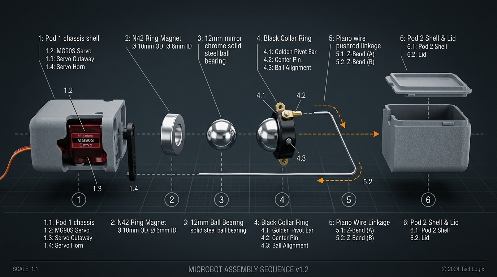
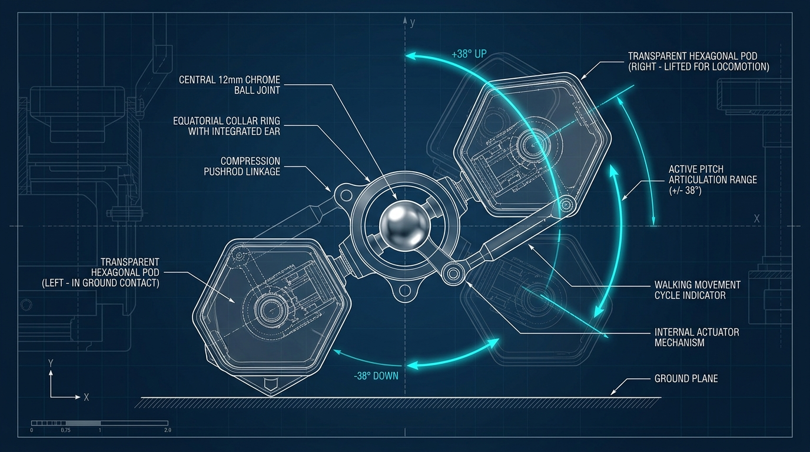
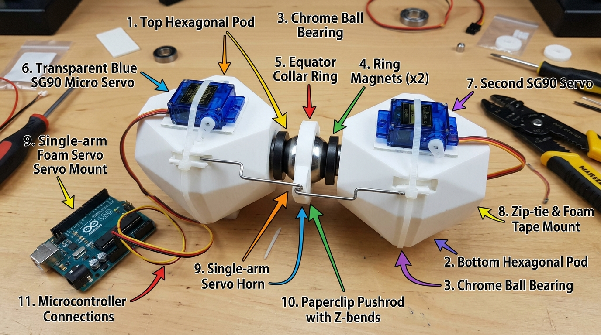
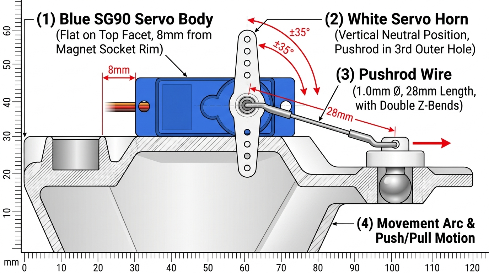

Microbot V1 Visual Architecture
Complete photorealistic engineering cutaway diagrams, exploded stacking order, and kinematics motion blueprint.

🔍 Diagram 1: Internal Cutaway View (Both Pods Assembled)
Notice how the components interact inside the transparent pod shells. There are no holes drilled in the center steel sphere.
- 12mm Chrome Steel Ball: Solid, mirror-polished sphere in the center. Serves as omnidirectional ball-and-socket core.
- Equatorial Collar Ring: Slim black ring with brass pivot ears that slip-fits over the ball equator.
- N42 Ring Magnets: Concentric silver rings inside pod cups pulling the steel ball with 5.2N holding force.
- 3.7g Sub-Micro Servos: Longitudinal blue coreless servos driving the single-arm white horns.
- Piano Wire Pushrods: 1.0mm spring steel wires connecting servo horns to collar pivot ears.
💡 Key Takeaway: The pod stays stuck to the ball purely by magnetic pull. The servo tilts the pod by pushing against the loose center collar ring.

📦 Diagram 2: Step-by-Step Exploded Stacking Sequence
Follow this exact physical stacking order when putting the parts together on your workbench:
- 1 Pod Chassis: Seat 3.7g servo into printed mounting ribs.
- 2 Ring Magnet: Press-fit 10×3mm magnet into the front socket cavity with a drop of glue.
- 3 Center Ball: Polished 12mm steel ball bearing snaps into the magnetic socket.
- 4 Collar Ring: Slide the collar ring onto the equator of the ball (brass ears horizontal).
- 5 Pushrod Linkage: Hook the 26mm piano wire into the servo horn and collar ear.
- 6 Snap Pod Lid: Route servo leads out the rear apex and snap the upper lid flush.

⚡ Diagram 3: Kinematics & Walking Movement Blueprint
Understanding the ±38° pitch motion and terrestrial crawling gait:
- Compression Stroke: When the servo pushes the pushrod, the pod tilts downwards (-38°) and plants its apex against the desk.
- Tension Stroke: When the servo pulls the pushrod, the pod tilts upwards (+38°) into the air.
- Anti-Phase Crawling Gait: Pod 1 plants down while Pod 2 lifts up and swings forward. Alternating this cycle walks the Microbot forward across your table!

NO 3D PRINTER REQUIRED
🛠️ Diagram 4: SG90 (9g) External Mount & Linkage Guide
If you have larger 9g blue SG90 servos and cannot reprint larger pods right now, use this direct external-mount configuration. The mechanics work 100% identically!
- 1 Surface Prep: Clean the flat upper facet of the pod shell with rubbing alcohol. Apply a 20×15mm strip of high-bond double-sided foam mounting tape.
- 2 Mount SG90: Press the SG90 servo body firmly onto the foam tape with its white drive gear pointing forward toward the center ball. Wrap one 2.5mm nylon zip-tie tightly around the pod and servo body.
- 3 Pushrod Linkage: Fit the single-arm white servo horn onto the servo spline. Use a 1.0mm paperclip or steel wire with Z-bends connecting the horn hole to the locked collar pivot ear.
- 4 Wiring & Power: Connect Orange signal wire to Arduino/ESP32, Red to 5V (4×AA battery pack), and Brown to Common Ground.
⚡ Kinematic Note: Because the SG90 is mounted externally, it actually delivers higher torque (~1.6 kg·cm) than the 3.7g micro servo, giving your robot even stronger crawling thrust!

PRECISION KINEMATICS
📐 Diagram 5: Exact Servo Position, Horn Angle & Pushrod Bending
Follow these exact millimeter measurements to ensure the pushrod transmits maximum mechanical leverage without binding or jamming:
- Distance from Rim (8mm): Place the SG90 front face 8mm behind the pod's front circular rim so the horn clears the magnet during full forward swing.
- Neutral Horn Position (90°): Power on the servo with your code sending 90°. Then press the single-arm horn on vertically pointing straight up.
- Pushrod Length (28mm): The distance between the two Z-bends is exactly 28mm. Use the 3rd hole from the pivot on the white horn.
- Double Z-Bends: Each end of the paperclip has a stepped "Z-bend" so the wire cannot pop out of the horn hole or collar ear during vigorous crawling.
🎯 Testing Pushrod Freedom: Gently turn the servo horn by hand while unpowered. The pod should smoothly pitch up (+35°) and down (-35°) without any binding or clicking against the pod shell!